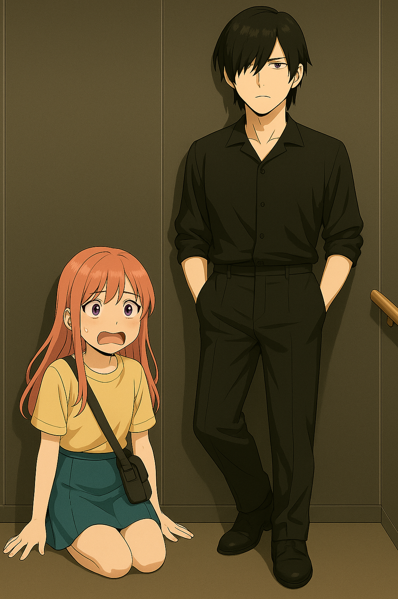

01｜楼层选择：666
货梯门缓缓合上，墙上的液晶屏闪着蓝光，提示音冷冷响起：
「请手动输入目标楼层。」
肖笑笑愣了一下，手指悬空，心里开始盘算：
“这栋楼一共666层……我在最顶？”
“要是像之前那种老旧外包楼，一分钟一层，那我得坐一天才能到吧？！”
神秘男站在她旁边，毫不犹豫地输入了【555】。
笑笑深吸一口气，也伸手，输入了【666】。
她内心翻腾：
“666……听起来吉利，但也太远了点吧？”
“别搞笑了……不会第一天就迟到吧？”
她没注意到，输入确认后，液晶屏角落一行小字亮起：
「⚠ 云霄飞梯｜极速模式启动中」
02｜蹲好，警告太晚了！
“咚”的一声轻响，货梯似乎启动了。
但并不是那种缓缓上升的惯常节奏。
而是……先是安静了整整两秒。
接着，一行红字突然在屏幕上跳出来：
「⚠ 建议乘客尽快蹲下，并双手扶墙。」
肖笑笑：“哈？？？”
她还没反应过来，就听见身旁神秘男淡淡开口：
“站不稳会摔倒，建议你蹲好。”
下一秒，轰——！！
货梯像脱缰的火箭直冲而上！
巨大的重力袭来，“啊啊啊啊——！” 笑笑整个人贴着墙面滑倒，屁股砸在地板上，脑袋一阵晕眩。
她感到像被巨大苍蝇拍猛地一拍，整个人像被摁进地板里。
那种感觉就像跳楼机起步那一瞬间：不是上升，而是全身的灵魂都被地心拉住了！
她抬头看神秘男，只见他双手插兜、稳如泰山，甚至一只鞋还踩着墙角像习惯了似的。
肖笑笑捂着头，心里哀嚎：
“这谁设计的货梯啊？！！！”

03｜555层的冷酷脱出
“叮——”
货梯在一阵剧烈惯性+突如其来的急刹车中嘎然停住。
门缓缓打开，屏幕显示：[555]
神秘男像什么都没发生一样站起，衣角都没皱。他侧头对着还坐在地上发晕的笑笑说：
“我到了。欢迎继续体验‘云霄飞梯’。”
说完，潇洒地踏出货梯，动作如同行走在宇宙失重舱里。
门缓缓合上。
笑笑坐在地板上，怀疑人生，扶着腰发出一声细微的呻吟：
“我是不是……坐过山车坐得太猛了？”
她好不容易爬起来，感觉自己的发型都在货梯重力里经历了一次世纪风暴。
她按了按还在发麻的腿，一边扶墙一边嘀咕：
“我真的只是想上个班而已啊喂！！”
随着门合拢，一行红字又显示在屏幕上：
「⚠ 建议乘客尽快蹲下，并双手扶墙。」
04｜666层，通往职场顶楼的第一步
“叮——”
几秒钟后，货梯门再次打开，这一次，是666层。
踉踉跄跄走出货梯的那一刻，肖笑笑仿佛穿越了次元。
前方是一个全玻璃落地窗的观景平台，阳光洒满灰色地毯，远处的大海、城市、天边的云彩全都一览无遗。像是误闯了什么总裁专属天台。
她愣住了，脚下还没完全站稳，脑袋还在回旋。
“这里……不是我该来的地方吧？”
正当她发愣的时候，一块电子导览牌亮起，上面赫然写着：
“欢迎来到滨海科技集团 IT 运维和hr行政层（666F）”
笑笑惊了，嘴角缓缓扬起：
“这……还真是高处不胜寒的工作环境啊。”
她深吸了一口气，轻轻拢了一下吹乱的头发，一步步朝着走廊尽头走去。
——货梯带她来了一个“高开高走”的第一天。